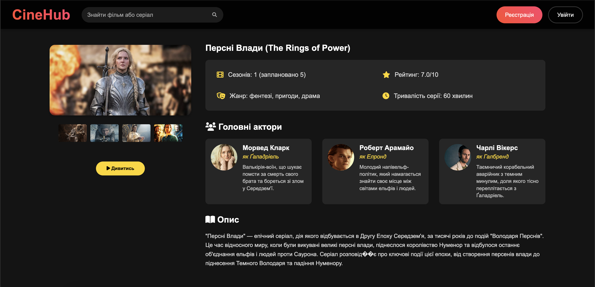
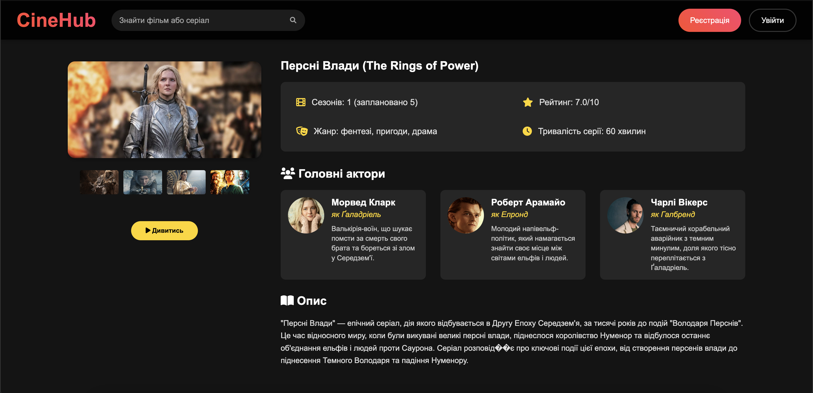
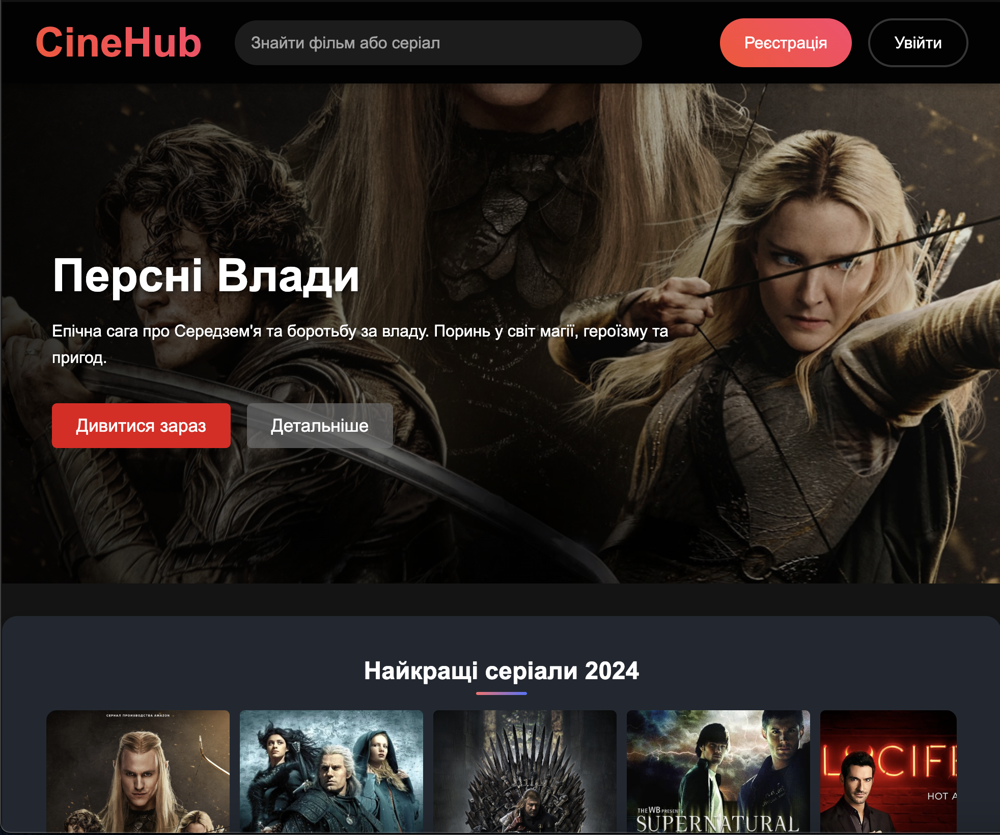
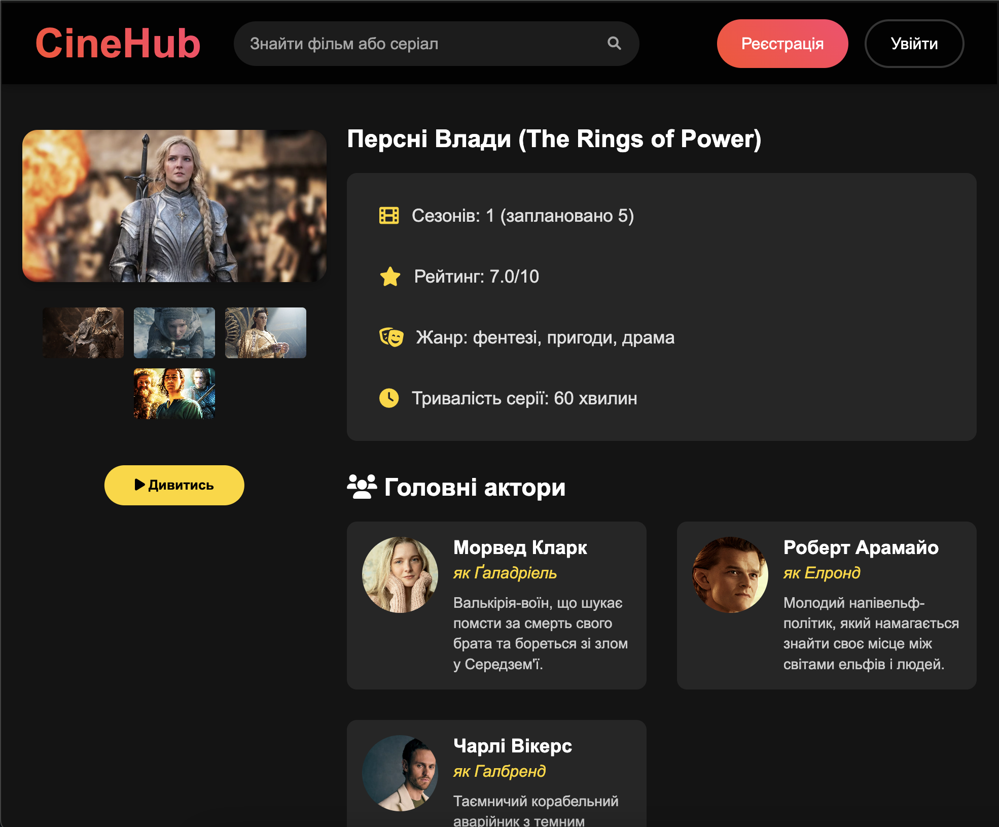
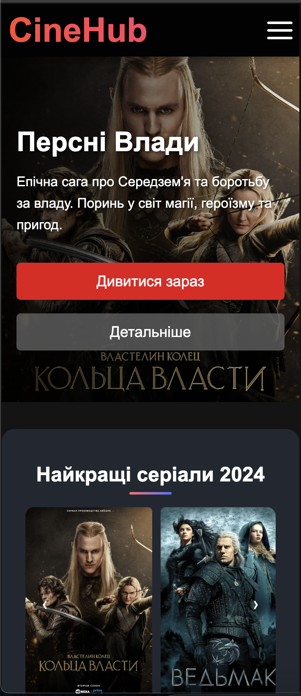
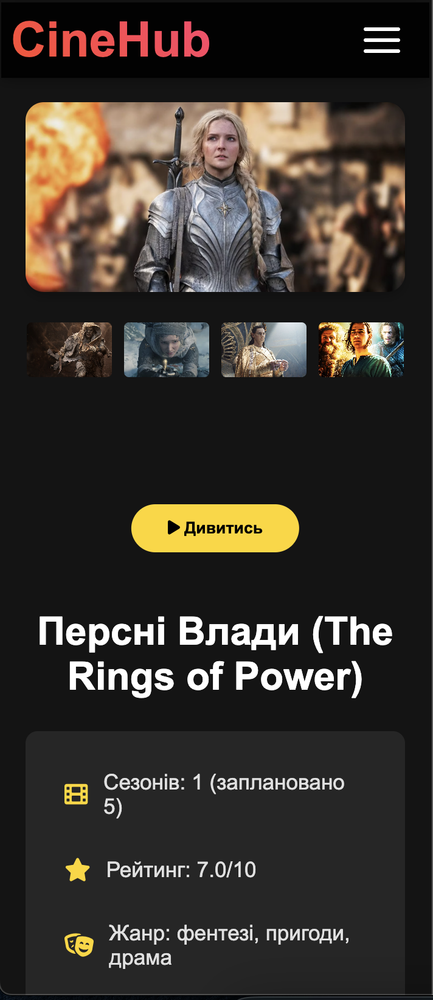

Інформація про лабораторну роботу
Тема:
АДАПТИВНА ВЕРСТКА. МЕДІА-ЗАПИТИ. МЕТАТЕГ VIEWPORT. СТРАТЕГІЯ MOBILE FIRST.
Мета:
Адаптивна верстка. Медіа-запити. Медіа-типи. Медіа-функції.Метатег viewport. Інструменти розробника. Стратегія Mobile First.
Розташування:
- WEB-застосунок:
https://cinehub.static.domains - Звітний документ:
https://cinehub-report.static.domains
Теорія верстки
Адаптивна верстка (Adaptive layout)
- Використовує фіксовані розміри макета для конкретних контрольних точок (breakpoints)
- Зазвичай має кілька фіксованих макетів для різних пристроїв (desktop, tablet, mobile)
- Змінює свій дизайн на певних точках ширини екрану
- Використовує медіа-запити (@media queries)
@media (max-width: 768px) {
.container {
width: 750px;
}
}
@media (max-width: 480px) {
.container {
width: 450px;
}
}
Гумова верстка (Fluid/Liquid layout)
- Використовує відносні одиниці виміру (%, vw, vh)
- Контент плавно масштабується відповідно до розміру екрану
- Не має фіксованих точок перебудови
.container {
width: 90%;
max-width: 1200px;
margin: 0 auto;
}
.sidebar {
width: 30%;
}
.content {
width: 70%;
}
Основні відмінності
Адаптивна верстка:
- Фіксовані макети для конкретних розмірів екрану
- Чіткі точки перебудови
- Більший контроль над дизайном
- Може бути складніша в розробці
Гумова верстка:
- Плавне масштабування
- Немає різких змін макету
- Простіша в реалізації
- Менший контроль над точним виглядом
Переваги адаптивної верстки
- Кращий контроль над дизайном на різних пристроях
- Можливість оптимізації контенту для конкретних пристроїв
- Краща оптимізація зображень
- Можливість приховати/показати певні елементи для різних пристроїв
Переваги гумової верстки
- Плавніший користувацький досвід
- Працює на будь-яких розмірах екрану
- Простіша в розробці та підтримці
- Менше коду
- Швидше завантаження (менше CSS)
Сучасний підхід
Зараз часто використовують комбінований підхід:
- Гумова верстка як основа
- Адаптивні елементи для складних компонентів
- Використання CSS Flexbox
- Застосування відносних одиниць виміру
Десктопна версія
 

Планшетна версія
 Мобільна версія
 Висновки
В ході виконання лабораторної роботи №4 було досягнуто наступних результатів:
- Освоєно принципи адаптивної верстки та її відмінності від гумової верстки
- Набуто практичних навичок роботи з медіа-запитами для різних розмірів екранів
- Опановано стратегію Mobile First та її переваги в сучасній веб-розробці
- Створено адаптивний дизайн для трьох версій сайту: десктопної, планшетної та мобільної
- Отримано практичний досвід роботи з інструментами розробника для тестування адаптивності
Отримані знання та навички є критично важливими для створення сучасних веб-сайтів, що забезпечують якісний користувацький досвіт на будь-яких пристроях.